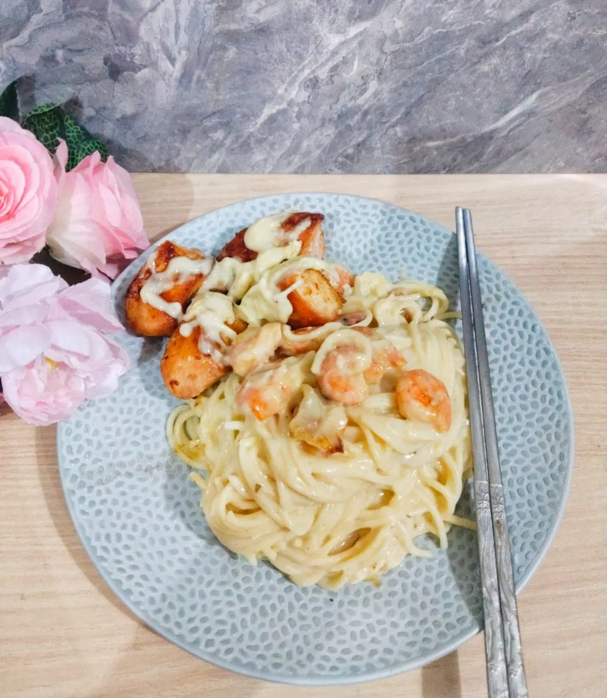

Shrimp Chicken Pasta
Pasta creamy dengan perpaduan udang dan ayam yang gurih
Pasta
40 Menit
2 Porsi
Bahan-bahan
- 1 bungkus pasta spaghetti
- 150 gram udang
- 100 gram ayam fillet
- 4 siung bawang putih
- 1/2 bawang bombay
- 300 ml susu full cream
- 2 SDM mentega
- 2 SDM tepung terigu
- secukupnya Merica
- secukupnya Garam
- 50 gram keju parut
- secukupnya Kaldu penyedap
- secukupnya Minyak untuk menumis
Langkah Memasak
- Rebus pasta spaghetti sampe matang kemudian angkat
- Ayam dipotong potong kotak2 tambahan garam and merica, diamkan dulu kurang lebih 10 menit kemudian di panggang mengunakan mentega sampai matang and kecoklatan angkat
- Udang di goreng dahulu bersama mentega sampe berubah warna and matang angkat sisihkan
- Buat saus nya. Mentega di cairkan kemudian tambahkan tepung terigu kemudian aduk sampe rata. Kemudian tuang susu full cream sambil diaduk and mengental
- Tambahkan lada, kaldu menyerap, minyak ikan, garam, sedikit gula kemudian aduk, sausny menjadi lebih kental kalau terlalu kental bs ditambahkan susu atau air. Matikan kompor
- Tumis bawang putih dan bawang Bombay sampe harum kemudian masukan kedalam sausnya. Aduk kembali and nyalahkan kompor. Masak sebentar saja
- Kemudian masukan pasta yg sudah di rebus aduk rata udang masukan aduk kembali tambahkan keju parut.
- Untuk penyajiannya tuang ke piring tata ayam dipanggang and siram dengan sausnya